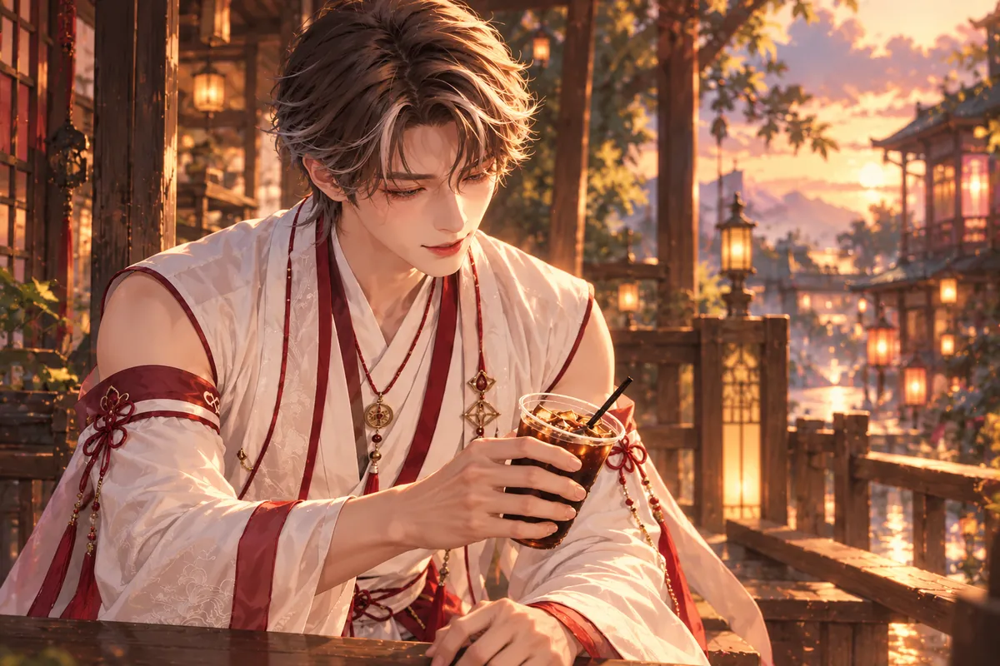
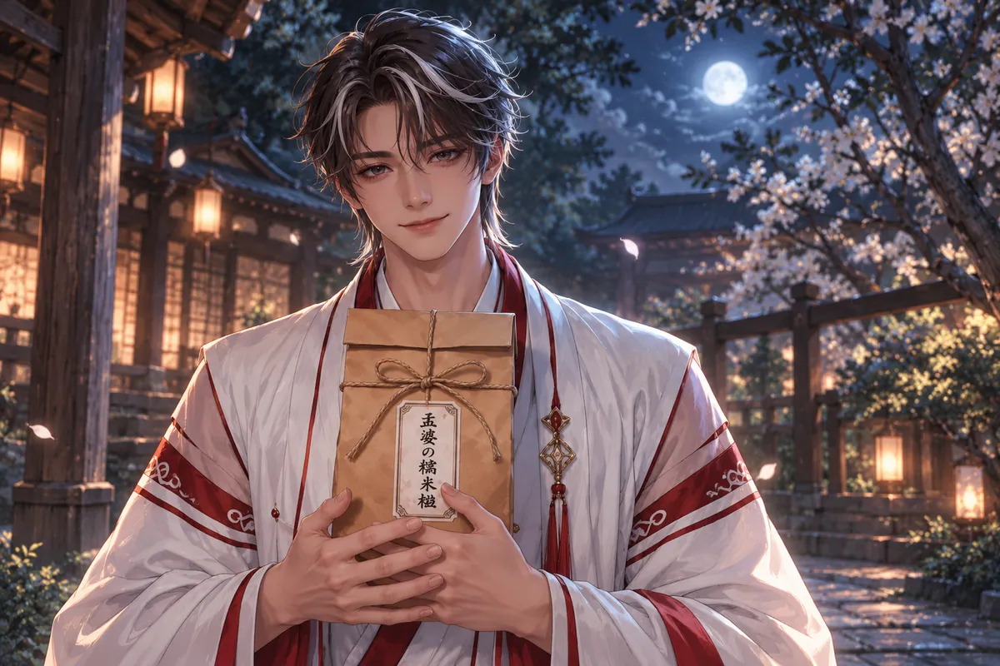

海邊夕陽落下，語彤問打完魏國以後呢。
月老說，秦王怕他失敗，戰事未了，仍把陰曼嫁去了楚國。
語彤氣得想在他腳上寫一個慘字。他任她嘴上鬧，目光卻停在天邊。
那一仗，他帶回凱旋，沒有帶回想留的人。
路上有人迎，有人向他的戰功道賀。他應過了那些話，進城後仍照例交代軍務，把該呈報的呈報，該安頓的安頓。事情沒有因為他想見的人不在，便容許他少做一件。
等身旁終於安靜，他才問：「她走了多久？」
回答的人低著頭，將那個時間說出來。
他仍站在原處。
「走的時候，有沒有……」
話到一半停了。對方抬頭等，他卻不知道自己到底想問留下什麼，還是有沒有說過會回來。
「將軍？」
他搖頭。「沒事。你去吧。」
腳步聲離開後，他才又望向她從前站過的地方。戰事還沒結束，宮裡的婚事已往下一步走，沒有誰等他帶著凱旋回來再商量。
他沒有怪送話的人。那人垂著眼，似乎也不知道該把恭喜或安慰放在此刻。他只問，還有沒有留下什麼。
於是漆盒到了手裡。不是一道能改變旨意的信，也不是可以拿去質問誰的證物，只是她曾經親手做過的味道。
田埂旁，他開啟漆盒。糯米糍一顆顆排好，旁邊留著竹簡。
陰曼已將做法交給廚娘，待他回來便可吃。最後兩個字是勿念。
岳夏澤捏著竹簡，讀了一遍，又讀一遍。
他從做法往下讀，知道她已替他想好：即使自己不在，也會有人照著做，不必等他開口求。他甚至能想見她向廚娘交代時，怎麼把容易弄錯的地方再說一次。
最後卻只剩兩字。前面的關照那麼仔細，到了該說她自己的地方，忽然停住。
田邊有人經過，看見他拿著竹簡，沒有多問。岳夏澤將漆盒挪了一點，給那人留路，手上的東西卻沒收。等腳步遠了，他又看那兩字。
若真能聽話，念頭便不該在這裡反覆。他也不能將勿念讀成她希望他追去。她已走到另一個國家，他連這份留給自己的甜食，都得在一個不會被人催促的地方慢慢吃。
糯米糍仍是他記得的味道。他咬了一口，攥著竹簡的手卻始終沒有鬆。
月升起，他坐在田邊吃。
遠處有人說話，有人回家。他把一小口放進嘴裡，慢慢嚼，沒有向任何人解釋為什麼吃得這麼久。
海灘上，語彤收起玩笑。
師父說，活著的時候，再也沒見過她。糯米糍的味道倒是一直記得。

語彤本來還有許多想問的。有沒有再託人送信，後來那些年怎麼過，明明他做了這麼多，為什麼連多見一面都沒有。可師父說得太平，她聽著，反而問不出口。
她看了看他手邊的甜點。自己以前只當那是一個愛吃糖的神特別喜歡的東西，買回來便拿他開玩笑；現在再看，包裝雖換了，裡頭卻還留著一個兩千年前的人。
海灘上的人聲從後面經過，師父沒回頭。語彤把原本想拿來逗他的書收進袋裡，手指停在封口，過了一會兒才扣上。
她沒有說別想了。那是陰曼寫過的話，師父已經讀過許多遍。她能做的，只是先陪他等夕陽落下，等他自己願意接著講。
海風吹亂師父的頭髮。他沒有撥開，語彤也沒再催他說下去。
＊ ＊ ＊
狐姬替語彤剪髮。她隨口問，剪頭髮也能算刑罰嗎。
月老說，古人信身體髮膚受之父母。
那年，他的頭髮被剪去，囚在牢裡。明日乞巧節，秦王已下旨車裂。
髮絲落地時，岳夏澤沒有伸手去撿。行刑的人照規矩做完，帶走刀具，留下幾縷還沾在衣領上的碎髮。他動了動肩，它們便刺進頸側，細小得像不值得理會，卻一直在。
牢門外有人換值，談的是明日要交接的事。他聽見自己的死期被放在那些差事之間，沒有爭辯。通敵的罪名既已定下，願不願意聽他的話，便不再是守門的人能決定的。
他靠牆坐，腕上的祈願繩仍在。陰曼留下它時，求的是凱旋；他確實回來了，卻連這座牢門都未能避開。
鑰匙響起，他先抬頭看，直到認出大牛，才知道來的不是另一項已經安排好的刑罰。
劉大牛拿鑰匙，讓他走。他說通敵是誣陷，在楚國守將身上找到銅符節的說法，根本不該相信。
岳夏澤沒走。他知道，開這道鎖的人也有家。
大牛把門推開一些，還想再勸。路就在外面，趁人少走，總比坐在這裡等死好。他說得很快，每一句都像替那條可能的路先往前跑一步。
岳夏澤問翠花好不好。大牛一愣，說好，再說孩子也好。話題忽然換了，他還想拉回來，卻見將軍聽得很認真。
當年在街上，他救的是兩個想好好過日子的人；如今大牛願意拿那個日子來換他的命。岳夏澤不能裝作不知道秦法會怎樣對待私放囚犯的人，也不能只顧門一開，自己就往外走。
他讓大牛把鑰匙收好。對方的手緊得發白，仍不肯退，他便再叫一聲名字。那一聲沒有官職，像他第一次要這個人從軍時，先讓人好好站起來的口氣。
大牛的第四個孩子剛出生。他替孩子取名邦，字季，希望興國安邦，四季充沛。說起孩子時，他的聲音竟比說自己更安定。
多年後，受過幫助的戀人以月下慶祝為暗號，在那個日子紀念他。故事傳至唐代，寫進定婚店，年輕人被說成老人，信的人越來越多，他也因此成神。

孟婆甜食屋裡，語彤氣憤他的主張竟招來陷害。自由戀愛、一夫一妻，碰到的原來不只人心，還有握著權力的人。
她又問，地府這麼大，沒有遇見陰曼嗎。
月老看向白衣女子，聲音輕下來。
「她在。只是忘了我。」
語彤的目光順著他望去。白衣女子正招呼客人，記得誰喜歡什麼口味，盤子放下之前還問要不要再添一點。這樣尋常的忙碌，她方才就看見了，卻從來沒有想到會和牢裡那個人連在一起。
她想看師父，又怕動作太明顯，只將身子轉回來一點。月老沒有叫她壓低聲音，她自己已不敢再把問題說得那麼大聲。
兩千年的故事一路講到這裡，最後的人竟在幾步外。語彤曾經覺得地府太大，要找到一個人很難，如今才知道，找到了也不一定能把名字喊出口。
師父看她，先讓她吃。甜點已經送來，再不動，陰曼便會問是不是不喜歡。他用這句很實際的話，將那段還不能說給對方聽的往事暫時收住。
他讓語彤保密。甜食的香氣漫過來，女子在那邊忙著，沒有抬頭。
＊ ＊ ＊
語彤想了很久，那兩個字到底怎麼寫才算數。
勿念。陰曼留下時，是希望他真忘了，還是因為除了叫他別念，已沒有別的話可以交出去。
月老說，他不知道。
她一向覺得師父懂得很多，這句不知道，反而讓她安靜下來。活了兩千年，師父仍不知道那兩個字是不是陰曼的真心話。
「我寫過讓柏宏忘掉我的東西。」她說。
月老望向她。
「寫的時候，明明每一個字，都在想他。」
她沒有再替那枚戒指辯護。月老也沒有問她後悔了嗎，只把甜點紙慢慢摺好。
有些為對方做的決定，仍會帶著自己不敢承認的害怕。怕對方等，怕對方不等，怕活著的人被留下，怕被留下的人終於走遠。
語彤說，若再來一次，她至少想先讓柏宏把話講完。
月老點頭，沒有再追問。語彤也不說了，陪他坐了一會兒。
＊ ＊ ＊
語彤想不通，既然都在，為何不能重新開始。
月老說起三百年前的遺跡。
他一直找改寫姻緣的方法，終於闖進神魔禁地。巨大的眼睜開，斥責人間小神竟敢窺探。他被打得重傷，由觀音救回。
語彤聽到重傷，先看師父現在的臉。他看起來仍是平日那個可以一面吃糖一面講話的人，很難想像曾被人從那樣的地方帶回。
她問那時是不是以為找到方法。月老說，人走到一個地方之前，總得先相信值得走。至於後來，便不是最初怎樣想就能決定。
語彤沒有再把禁地想成藏著寶物的房間。師父為了進去付出的不是一趟路的時間，連活著回來，都得靠另一個人。他說起觀音時沒有多加形容，卻沒有略過是誰救了他。
她將那個名字記住。也記住師父並非什麼都能改，知道姻緣的神，仍可能為自己所求的一條緣，走到連退路都無法握住的地方。
那一趟仍讓他看見命運的規則，看見自己牽的一條緣，會把人帶往什麼地方。
回來才知道，陰曼也在地府。
她找不到他，向十殿閻羅求遺忘，最後喝下自己發明的孟婆湯。
而他們身上，早已有古神的詛咒。靠得太近，兩人的命運便會一同變壞。
語彤原本以為，只要重新認識就好了。不記得從前，便從現在開始，再去吃一頓飯，慢慢讓對方喜歡自己一次。這個辦法在她腦裡很簡單，問出口也沒有多猶豫。
師父把詛咒說清之後，她才知道，自己催他往前的一小步，可能不只讓往事被記起。她想到陰曼剛才自在的笑，忽然不敢再替兩人作決定。
月老沒有責怪她。他知道，若沒有聽過前面的事，誰都會覺得只是膽子不夠，或是想得太多。連他自己，也不是一開始便願意停在這段距離。
語彤低下頭，理了理袖口。她能牽紅線，能聽師父教導，卻還不能給眼前這件事找出一個不會傷人的辦法。
甜食屋裡，他把糯米糍帶來。陰曼笑著和語彤說話，抱抱新來的小月老，嫌他又逗孩子。
她活得自在，笑也自在。
月老沒有往前再走一步。
陰曼端著新的一盤走回來。「還要嗎？」
月老看了看，伸手接過。「謝謝。」
「剛才那盤吃完了？」
「嗯。」
「那這盤慢慢吃。還有別的想要，可以叫我。」
他點頭，沒有像從前那樣多留她一句。陰曼轉身去忙，衣袖從桌邊掠過。
月老的手停在盤沿，等她走遠，才拿起下一塊甜點。
語彤看見他將盤子放到自己面前，還替她留了一個方便伸手的位置。平日這樣做，她只會笑著問師父是不是又想偷吃；現在那份從容卻讓她知道，他已練習過太多次怎麼坐在這裡。
陰曼說孩子可愛，說往後可以常來。月老答好，沒有借那個常字替自己多求什麼。她轉身忙別的客人，他的眼睛才跟過去一下，很快又收回。
語彤終於明白保密不只是不能說破名字。回去以後，也不能自作主張替師父安排偶遇，不能以為做了一件好事，便要他們領情。她把這些沒說出口的打算，一項一項放下。
語彤站在她的擁抱裡，越過肩膀看師父。他沒有跟著靠近。陰曼鬆開她，轉身去拿甜點，仍不知道眼前這個年輕人曾是誰。
「這樣看她開心，我已經很滿足。」

他說完，笑了一下。語彤沒有拆穿那個笑，也沒有再勸靠近，只把這個不能隨便告訴別人的故事，安靜收好。